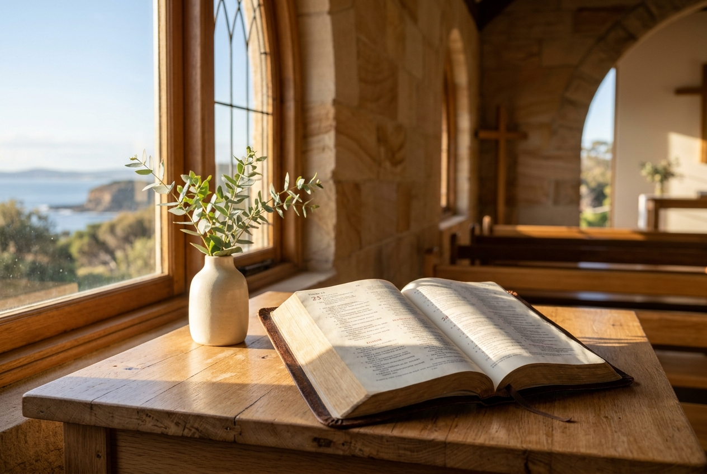

Sundays at 10:00am
Our regular Sunday worship services are held in our church building at 58 Fisher Road, Dee Why. All are welcome.
Our regular Sunday worship services are held in our church building at 58 Fisher Road, Dee Why. All are welcome.
Special community worship services on Good Friday and Christmas Day commence at 9:30am.
Our Tuesday Evening Small Group meets at the church from 7:30pm for Christian Bible study and fellowship.
Our worship services are structured entirely around God’s Word and have three clear aims:
We sing a mixture of contemporary songs and classical hymns led by a music team, and at times we take up offerings for specific ministries we support as a denomination.
We celebrate the Lord’s Supper bi-monthly, open to all who recognise they are sinners in need of a Saviour, who profess Jesus alone to be that Saviour, and who desire to live according to His Word. We also administer infant baptism for Christian parents who request it for their children, and believer’s baptism for adults.

Every Tuesday evening we gather at the church building from 7:30pm for Bible study, discussion, prayer, and encouragement. All newcomers are welcome to join.
We produce a regular information sheet for members and friends to keep everyone informed about congregational news, prayer needs, and upcoming activities.
Northern Beaches CRC is committed to welcoming children and parents and providing a safe, friendly environment where children are listened to, learn, and grow.
Parking at our church premises is very limited, so we recommend using the nearby options below.
Directly across Fisher Road from the church. Access is via Kingsway, offering free underground parking for 3 hours.
Care when crossing: Crossing Fisher Road can be hazardous — please take great care, especially with children.
On the same side of Fisher Road as the church, approximately 100 metres further down the road.
The gate is generally open on Sunday mornings; enter via the driveway down the side of the building.
A few spaces inside our property line are reserved for those unable to walk further, and there are a small number of street spaces on Fisher Road.
Avoid parking on marked yellow lines — they are “No Parking” zones and fines are often issued.
Have questions about visiting with children, parking access, or our beliefs? Send us a message anytime.